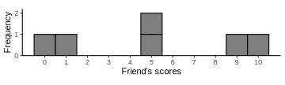

5|VARIABILITY

Overview
Variability example
Imagine you and a friend got the following scores
- You: 0, 4, 5, 5, 6, 10
- Friend: 0, 1, 5, 5, 9, 10
How would you describe the difference in your performances?
- Same mode/mean/median
- But one seems more variable than the other
Variability example


Leptokurtotic

Platykurtotic
Variability
- Like the mean
- A descriptive statistic
- Single number to summarize dataset
- Unlike the mean
- Rather than describing the middle of the data, variability describes the spread of the data
- Higher variability means greater differences between scores
- Purpose
- Quantify how well an individual score represents the distribution
- Important for inferential stats
Measures of variability
- Quantitative distance measures based on the differences between scores
- Each has different characteristics
- Range
- Describes the spread of scores
- Distance of most extreme scores from each other
- \(SS\), Variance, and Standard Deviation
- Companion concepts, but different things
- Describe distance of scores from the mean
- Small values: low variability; scores clustered close to mean
- Higher values: greater variability; scores widely scattered
Range
Range
- Difference between lowest & highest scores
- Distance covered by the scores in a distribution
- Range = \(X_{max} - X_{min}\)
- You: 0, 4, 5, 5, 6, 10
- \(10 - 0 = 10\)
- Friend: 0, 1, 5, 5, 9, 10
- \(10 - 0 = 10\)
Range
- Characteristics
- Does not consider all the data
- Based only on two scores: most extreme values
- Imprecise, unreliable measure of variability
- Not often useful for descriptive/inferential stats
- But checking range & min/max values can be useful for finding mistakes in data input
- Impossible range / min & max values
Sum of squares, variance, SD
Definitions
- Deviation
- Distance from the mean: deviation score = \(X – \mu\)
- \(SS\): Sum of squares
- Sum of squared deviations
- Variance
- The mean squared deviation
- Average squared distance from the mean
- Calculation differs for population and samples
- Standard deviation
- The square root of the variance
- Provides a measure of the average (standard) distance of scores from the mean
Approach
- Determine the deviation of each score
- Distance from the mean
- Deviation score = \(X - \mu\)

- To find “average deviation” just sum the deviations and divide by \(n\)?
- Dead end; always sums to \(0\)
Calculations
- Find the deviation for each score
\(X - \mu\)
- Square deviations
\((X - \mu)^2\)
- Sum the squared deviations
\(SS = \Sigma(X - \mu)^2\)
- Find average of squared deviations
\(\sigma^2 = \dfrac{SS}N\)
- Take square root of variance
\(\sigma = \sqrt{\sigma^2} = \sqrt{\dfrac{SS}N}\)
Calculating by hand
| \(X\) | \(X-M\) | \((X-M)^2\) |
|---|---|---|
| 0 | -5 | 25 |
| 4 | -1 | 1 |
| 5 | 0 | 0 |
| 5 | 0 | 0 |
| 6 | 1 | 1 |
| 10 | 5 | 25 |
| \(M = 5.00\) | \(SS = 52.00\) | |
| \(s^2 = 10.40\) | ||
| \(s = 3.22\) |
| \(X\) | \(X-M\) | \((X-M)^2\) |
|---|---|---|
| 0 | -5 | 25 |
| 1 | -4 | 16 |
| 5 | 0 | 0 |
| 5 | 0 | 0 |
| 9 | 4 | 16 |
| 10 | 5 | 25 |
| \(M = 5.00\) | \(SS = 82.00\) | |
| \(s^2 = 16.40\) | ||
| \(s = 4.05\) |
Sum of squared deviations
- Very important concept! Especially later
- Definitional formula
- Find each deviation score \((X – \mu)\)
- Square each deviation score \((X–\mu)^2\)
- Sum up the squared deviations \(\Sigma(X–\mu)^2\)
\(SS = \Sigma(X - \mu)^2\)
- Computational formula
- Square each score & sum the squared scores
- Find the sum of scores, square it, divide by \(N\)
- Subtract the second part from the first
\(SS = \Sigma X^2 - \dfrac{(\Sigma X)^2}N\)
SD & variance for samples
- Research goal:
- Draw general conclusions about population based on limited information from a sample
- Problem:
- Samples have less variability than population they are drawn from
- Computing the Variance and Standard Deviation in the same way as for a population would give a biased estimate of the population parameter
- Biased estimate: Systematically overestimates or underestimates the parameter
- Unbiased estimate: Average value of statistic is equal to population parameter
- Variance & SD for samples underestimate population parameters
Underestimation
- Why samples underestimate variability
- Soup
Underestimation
- Why samples underestimate variability
- Height
Height
Calculating variability of samples
- Simple solution: divide \(SS\) by \(n – 1\) instead of \(n\)
- Produces unbiased estimate of the population variance
Variability equations for samples
- Find the deviation for each score
\(X - \mu\)
- Square deviations
\((X - \mu)^2\)
- Sum the squared deviations
\(SS = \Sigma(X - \mu)^2\)
- Find average of squared deviations
\(\sigma^2 = \dfrac{SS} {\color{red}{n-1}}\)
- Take square root of variance
\(\sigma = \sqrt{\sigma^2} = \sqrt{\dfrac{SS}{\color{red}{n-1}}}\)
Degrees of freedom
- Why \(n – 1\)?
- Degrees of freedom
- Number of scores in sample that are independent and free to vary
- Population variance
- Mean is known: Deviations are computed from a known mean (not one we had to calculate)
- Sample variance as estimate of population
- Population mean is unknown: We calculate sample mean instead, as an estimate of population parameter
- Then use calculated mean to calculate deviations
- \(df\) is \(n\) minus number of population parameter estimates we already calculated
Degrees of freedom
Degrees of freedom
Degrees of freedom
Degrees of freedom
- Why \(n – 1\)?
- \(M = 5\)
- \(n = 3\)
- If you know the first 2 scores:
- 3, 5
- \(M = \dfrac{\Sigma X}{N} = \dfrac{3 + 5 + X}{3}\)
- So \(X = 3*M - 3 - 5 = 7\)
- There is only 1 possible value that \(X\) can be
- It is not free to vary
- We’ve lost 1 degree of freedom
Variability example
- SD as a measure of opinion polarization
- James O’Malley: Exclusive: The Most Critically Divisive Films According To Data
- (Melancholia, Inception, Sin City)
- James O’Malley: Exclusive: The Most Critically Divisive Films According To Data
- Star Wars
- The “backlash” against Star Wars: The Last Jedi, explained
- “Why the latest film in the galaxy-spanning franchise has proved so unexpectedly polarizing.”
Star Wars variability
New names:
Rows: 9 Columns: 7
── Column specification
──────────────────────────────────────────────────────── Delimiter: "," chr
(1): Movie dbl (6): N...2, mean, sd, N...5, M, SD
ℹ Use `spec()` to retrieve the full column specification for this data. ℹ
Specify the column types or set `show_col_types = FALSE` to quiet this message.
• `N` -> `N...2`
• `N` -> `N...5`| Movie | N | M | SD | N | M | SD |
|---|---|---|---|---|---|---|
| Star Wars: Episode IV - A New Hope | 24 | 90.1 | 16.7 | 1,302,317 | 85.0 | 16.4 |
| Star Wars: Episode V - The Empire Strikes Back | 25 | 83.5 | 20.8 | 1,230,844 | 85.9 | 16.3 |
| Star Wars: Episode VI - Return of the Jedi | 24 | 63.8 | 25.2 | 1,006,122 | 82.6 | 15.5 |
| Star Wars: Episode I - The Phantom Menace | 36 | 56.4 | 22.9 | 769,435 | 65.3 | 20.3 |
| Star Wars: Episode II - Attack of the Clones | 39 | 60.3 | 22.0 | 678,519 | 66.3 | 20.2 |
| Star Wars: Episode III - Revenge of the Sith | 40 | 71.4 | 19.7 | 751,751 | 76.1 | 18.8 |
| Star Wars: Episode VII - The Force Awakens | 55 | 80.8 | 14.2 | 898,767 | 77.7 | 19.6 |
| Star Wars: Episode VIII - The Last Jedi | 56 | 84.1 | 13.5 | 602,045 | 66.6 | 24.5 |
| Star Wars: Episode IX - The Rise of Skywalker | 61 | 57.2 | 16.5 | 418,656 | 64.7 | 23.4 |
Learning checks
Is it possible for a sample to have a standard deviation of zero?
A sample of four scores has \(SS = 24\). What is the variance?
Why do samples systematically have less variability than the population?